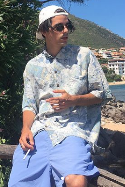
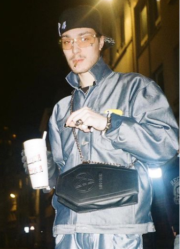

Soudiere
Francuski producent Soudiere zadebiutował we wrześniu 2016 roku epką pod tutułem "Life Ep", na której znajdowały się utwory tworzone w współpracy z SHAQ, porducentem znanym dziś ze kolaboracji z rapperem Nightlovell. Dotychczas stworzył 7 epek, oraz współtworzył wiele singli innych artystów. W 2020 roku wraz z znajomym, Dj Smokey wypuścili album "Only 2 Left Alive", na którym zagościł także SHAQ. Soudeire jest założycielem kolektywu "Purple Posse", do którego przyjął Mythica, Dj Yung Vampa, Aseri, oraz jeszcze kilku artystów Phonkowych.
Polecany album
DJ Smokey
Kanadyjski producent stał się legendą wśród całego trillowego i Phonkowego undergroundu już w 2015 roku, ponieważ swój pierwszy mixtape wypuścił w 2012 roku, mając wtedy 20 lat. Jest założycielem Positive Squad, do czego często odnosi się w swojej twórczości. Jego wywiad w 2016 z magazynem No Jumper rzucił więcej światła na scenę na której tworzy.

Polecany album
DJ YUNG VAMP
Gregory Renard, belgijski DJ i producent muzyczny jest jedym z najważniejszych przedstawicieli phonku i trillu na świecie, mimo, że karierę zaczął w 2016. Nawiazywał on współpracę z dużymi mainstreamowo raperami, np z Souljia Boy, Yung Gravym czy Scarlxd i producentami, w tym z Dj Smokey jak i Soudiere. W swojej twóczości łączy Phonk i trill, wykorzystuje dużo rodzaji sampli w tym Jazzowe, Funkowe lub sample z horrorów czy programów Tv, np z "Archiwum X". Jego producer tag, czyli trzykrotne "Smoke" słyszane na początku utwórów które stworzył, jest bardzo dobrze rozpoznawany.
Polecany album
Lowpocus
Lucas Rainville, kanadyjski producent i Dj. Stworzył on 3 phonkowe mixtapy, zajmuje się on głównie pracą Dj. Jest francuskiego pochodzenia, a wywiady z nim przeprowadzane wpłyneły na popularyzację tej muzyki we Francji oraz Kanadzie.
Polecany album